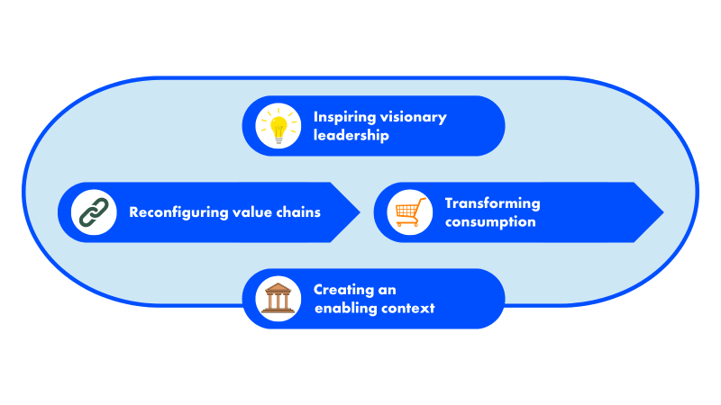

SOURCE: FORUM FOR THE FUTURE
Our focus
Purpose of business
Too often business decisions unintentionally damage human and planetary health or impact the most vulnerable. Instead, the private sector can transform into a powerful agent of rapid, positive change. What’s needed to make that happen?
Business leadership and innovation has become critical in determining whether we will be successful in creating a just and regenerative future in which both people and the planet can thrive.
Yet conventional ‘sustainability’ strategies and tick-box approaches to ESG are falling short of the systemic and urgent transformation needed.
Ahead of government and the media, businesses are the most trusted institution right now - with around 80% of people looking to them to solve our global challenges. Some trailblazing businesses have grasped the scale of this and are responding with pace and vision. But will others wake up fast enough to the need for a radical shift in their purpose?
The opportunity: a business reset
Forum was founded in 1996 on the belief that businesses can be a force for good. Today, we’re doubling down on that belief.
Progress has been promising, but it’s not yet adding up. A narrow focus on short-term profit maximisation is putting the longer-term viability and prosperity of our planet, our society and so businesses themselves at risk. There are countless examples of sustainability ‘solutions’ - slightly more sustainable products; sustainable innovations; ESG ratings - but most actually fail to tackle the root causes of the issues they aim to resolve, while reinforcing the status quo and legitimising dangerous inaction and delay.
It’s time for businesses to reset. ‘Doing less harm’ or even being slightly ‘net positive’ will no longer be enough. What’s needed is a wholescale transformation.
And that starts with asking a very fundamental question: what is the purpose of business in our society and economy?
Our vision: just and regenerative business advocating for people and planet
At Forum, we’re challenging norms.
We believe mainstream expectations about the purpose of business in society and the economy must fundamentally change. Profiting from the exploitation of our planet and its people must become unacceptable, while caring for the long-term health of the people and places that a company impacts, must become the expected norm. We call this a just and regenerative mindsetand believe it should be at the heart of running any business.
First, this means a business transforming its own direct operations. This spans both ‘softer’ elements such as leadership, culture and communication and ‘harder’, more tangible aspects such as structure, strategy and the policies and criteria used to guide decision-making and budgeting.
It’s then about indirect impacts and sphere of control. Businesses should look across entire value chains for opportunities to innovate - from procurement policies and supporting supplier resilience, to finding new ways of enabling customers to enjoy healthier, happier and more sustainable lifestyles.
Lastly, it’s about sphere of influence; a business looking beyond its value chain to the wider operating context. How can business transparency and accountability mechanisms be designed to create transformational rather than incremental change? How can business influence our international financial architecture to evolve so that our economy promotes, not hinders, sustainability efforts? What are the key advocacy asks businesses should be making of policymakers to enable a level playing field of strong and fair regulation that supports sustainability?
Why this matters
Underpinning all of this is the need to reimagine how the economy works. Business can and must play an active role in accelerating a shift from an economic system built on extraction, exploitation and short-sightedness to one that prioritises the health and wellbeing of everyone and the planet we depend upon.
The private sector will be a decisive factor in whether or not this shift is even possible.
So where is Forum focusing?
By 2030, we aim to have contributed towards a decisive shift away from short-term profit maximisation, toward business as a driver of long-term prosperity and wellbeing for people and planet.
To do this, we are focused on four areas where we believe our skills, expertise and experience can make a real difference:

- Inspiring visionary leadership. This involves supporting ambitious businesses to adopt a just and regenerative mindset, define their change-making purpose and understand what’s needed to truly embed, live and deliver purpose-led change.
- Reconfiguring value chains. The 2020s are calling for a shift from just focusing on cost and efficiency to creating and distributing value more equitably, within planetary boundaries and in ways that restore ecosystem health. So what could fit-for-the-future value chain models look like?
- Transforming consumption. Endless growth in resource consumption on a finite planet is simply untenable and there’s an urgent need to reimagine how and why we consume goods and services. How can we all enjoy a good life that meets our needs and ensures our wellbeing within planetary boundaries?
- Creating an enabling context. How can key actors such as investors, accountability institutions and civil society shape an enabling context for business that supports the transformation needed, rather than locking in the status quo?
Get in touch
“Business transformation starts with asking a fundamental question: what is the purpose of your organisation in our society and economy? Why are you here? What does that mean for how you operate?
Forum for the Future is in the business of change - what it means, how to do it, and how to make it last. We genuinely believe business can and should be a force for good but to really embrace that means not just transforming your direct operations, but understanding that the health of your business depends on healthy economies in healthy societies on a healthy planet. Change is already happening; some businesses are getting ahead, discovering exciting new sources of value and gaining competitive edge, where others risk being left behind.”
James Payne, Forum’s Global Strategic Lead, Purpose of Business
Reach out to James or see more about our work to transform the purpose of business below.
SOURCE: FORUM FOR THE FUTURE